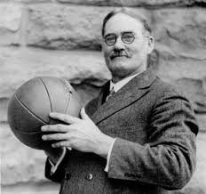
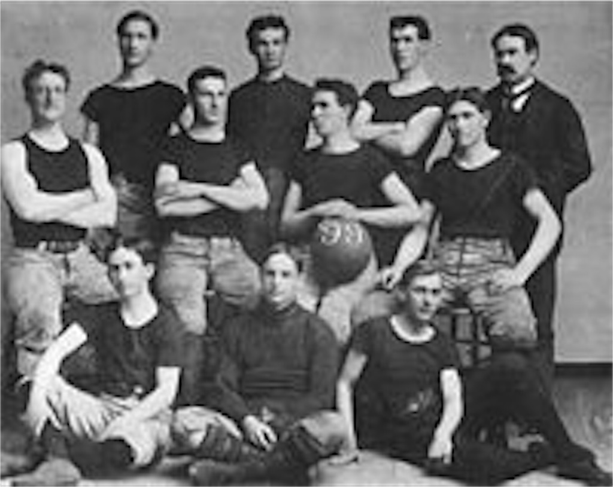
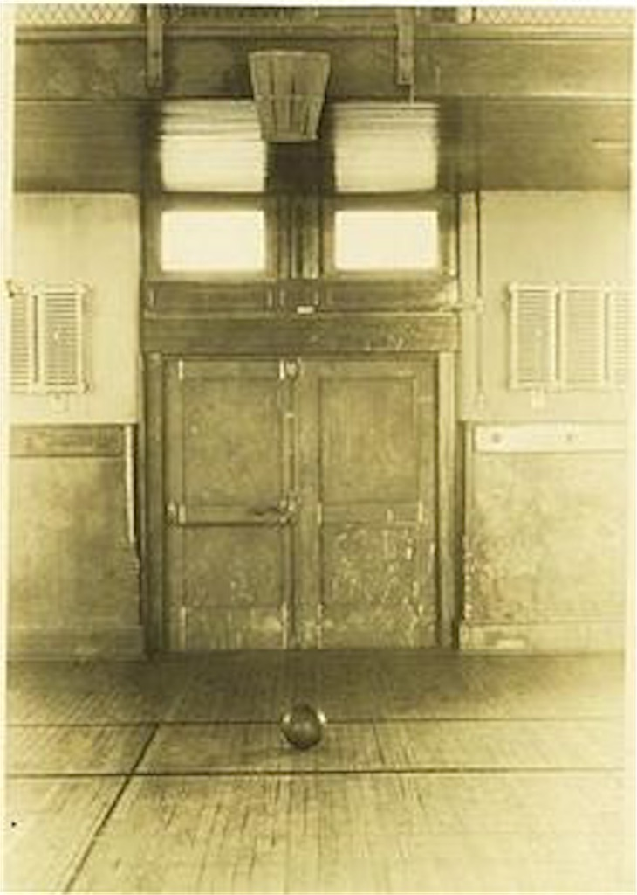

ここではバスケットボールの歴史について語っていきたいと思います。
まず、最初にバスケットボールがどのようにして作られたのかを見ていきましょう。
１.新たなスポーツの創造アメリカのマサチューセッツ州のYMCAトレーニングスクールでは、冬の体操中心のプログラムに全米のYMCA学生たちは意欲が無く、競技性のあるプログラムを求められていた。そこで体育部主事が５人の体育教官を集め話し合い、「新しいスポーツを創るしかない」という結論に達した。その５人のうちの一人であった”ネイスミス”（カナダ人）はアメフト・サッカー・ラクロスを屋内で行おうとしたが失敗に終わってしまった。
そこでネイスミスは失敗をもとに各スポーツからいくつかの要素を取り出すことにする。
まず、ボールを使用すること、そしてラフプレーを防ぐためにボールを持ったまま走ることの禁止（実質、タックルの禁止）、安全性を重視するためにゴールを頭上に設置した。これらがいわゆるバスケットボールの原型である。
ちなみに新しいスポーツを創造するという点に関して、たった一人で初期の形を作り上げたという前例は非常に少ない。

２.最初の試合と名称1891年12月21日、新たなスポーツの試合が行われた。この試合では各チーム9人で11×15mのコートを使用（ちなみに現在は28×15m）。ネイスミスは45cm四方の箱を求めたが用意出来ず、代理として桃を入れる籠を使用、そしてボールはサッカーボールとした。籠が設置された高さは3.05m、つまり現在まで変更されていないのである。
ちなみにこの9人にはポジションがあり、ゴールキーパー1人・ガード2人・センター3人・ウイング2人・ホーム1人(ホームとはどこなのかは不明であるが...)と決まっていた。
今じゃ考えられないことですよね...
それから、学生とネイスミスの間でこのスポーツの名称について議論。とある学生が『ネイスミス・ボール』と提案したが、当のネイスミスがそれを拒み、籠を使っていることからバスケットボールとしたという。
自分の名前が人気スポーツの名前になるはずなのにネイスミスさんはほんともったいないことをしましたね。

３.バスケットボールの進化翌年、ネイスミスは競技として全国のYMCAに取り入れるべく13のルールを制定。これらが基礎となり現在までに250以上のルールが制定されている。
ちなみにネイスミスの13のルールには人数は明確に規定されておらず、同人数ならば良いとされていた為、とある大学では50 on 50という大規模な試合が普通の体育館で行われ、担当した教師が「体育館が破壊されかねない」という名言(？)を残しています。
この話を元にやっていたのかは分かりませんが、"Fischer's-フィッシャーズ"というYouTuberの方が「バスケ50対50の100人で試合したらどうなっちゃうの！？ basketball 50on50」という動画をあげています。もし良かったら50対50のバスケのバスケに興味がある方はlinkを貼っておくので見てみてください。
人数に関しては1894年にコート面積に応じて5/7/9人と細かく設定され、1897年に現在と同じコートの面積 ５人体制に定められた。
そしてもう１つ、バスケットボールの由来である籠も当然進化しています。
籠をゴールとするとの最大のデメリットは何でしょうか？
それは入ったボールが落ちてないことです。（笑）
当時はシュートが決まると、梯子や棒を使い取り出していたといいます。そして金属製円筒になり、少しずつ改良を続けた末、1913年あたりでようやくネットの底を通り抜けられる現在の形となったのです。
長い過程で進化しているリングだが、１つだけ最初から完成していたものがある。リングの内径である。ネイスミスが最初に要求したのが45cm四方の籠、現在のリングも内径45cmなのである。つまりネイスミスが考え出したこの大きさが誕生以降1度も変更する必要なく現在に至っているのです。
ネイスミスさんはとてもすごい方ですよね。
そしてここで１つの画像を見てください。

当時の籠を体育館で3.05mに付けるとこの位置になります。例えば贔屓のチームに勝たせたいという強い気持ちで上のギャラリーから見ている客は何ができるのか。そう手足や棒で邪魔をする事ができるのです。
もう勘のいい方は気付かれているでしょう。それを阻止するためみ誕生したのが、バックボードである。現在ではレイアップなどあらゆるシュートに使われるボードだが、実は全く違う理由で取り付けられたのです。設置当初は金網を設置、1904年から木の板になったが、こうなるとギャラリーからは入ったのか判別がつかなくなったのです。そこで透明のプラスチック板になったのです。
この事に関しては調べていてびっくりしました。
ちなみにバックボードは当時エンドライン上にあったが、リングが61cm内側に設置されることになり、自動的にバックボードもコート内に設置されるようになっています。
ちなみに1892年に正式にバスケットボールと名称が決定した際は 『Basket ball』となっていましたが、 『basketball』に1921年に改名されています。